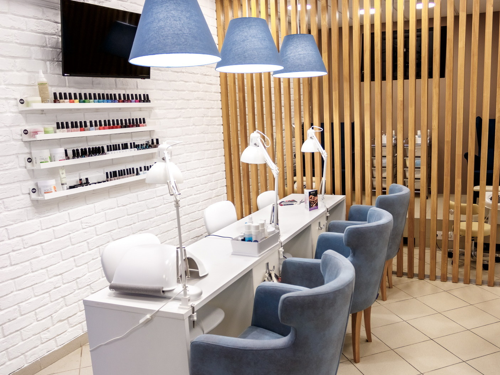
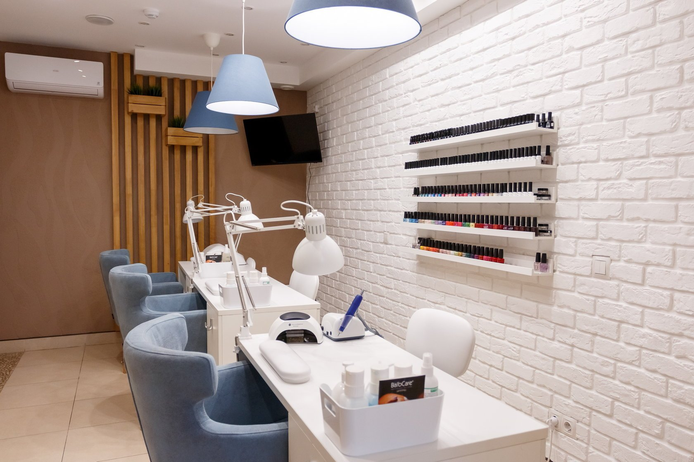
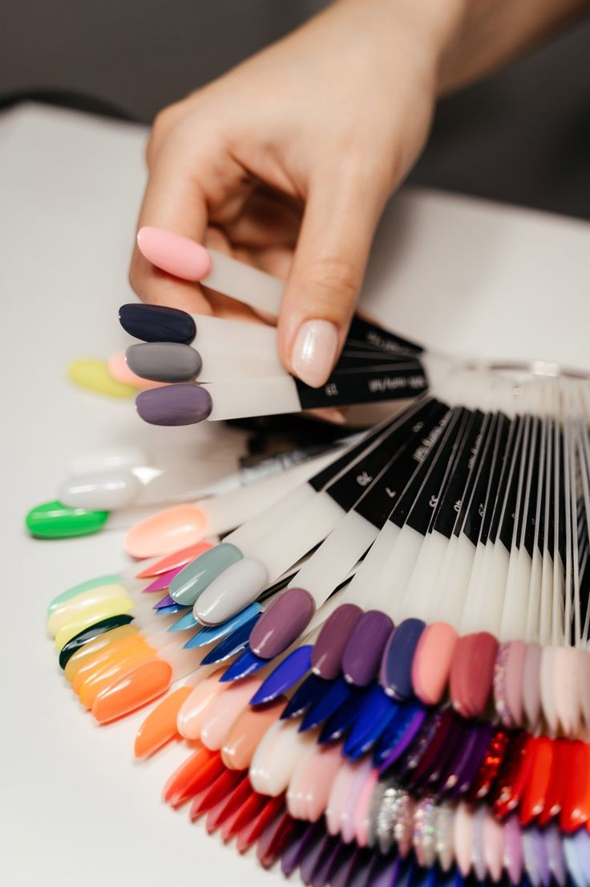

Красота в ваших руках!
Салон "Идеал" открыл свои двери в 2018 году благодаря мечте двух подруг - Анны и Елены. Они всегда любили создавать красоту и делиться этой красотой с другими. Начав с небольшой студии, мы быстро завоевали репутацию салона с высоким уровнем сервиса, использованием качественных материалов и внимательным отношением к каждой клиентке. Мы постоянно повышаем квалификацию наших мастеров и следим за последними тенденциями в мире маникюра, чтобы предлагать вам самые актуальные и модные решения.
  Мастер маникюра и педикюра. Стаж работы более 5 лет. Специализируется на классическом маникюре и дизайне ногтей.
Мастер аппаратного маникюра и педикюра. Опыт работы более 7 лет. Любит экспериментировать с цветами и формами.
Мастер педикюра и SPA-ухода за ногами. Постоянно повышает свою квалификацию.
Мастер маникюра и наращивания ногтей. Имеет множество сертификатов и дипломов.
"Отличный салон! Очень приветливые мастера и качественное обслуживание." - Ирина
"Всегда довольна результатом! Спасибо Анне за прекрасные ноготки." - Светлана
"Прекрасное место! Рекомендую всем!" - Ольга
"Очень понравилась работа мастера! Ручки как у куклы!" - Екатерина
"Приятная атмосфера и профессиональные мастера, что ещё нужно!" - Ксения
"Теперь только к вам! Спасибо за красоту!" - Наталья
"Все мастера очень аккуратные и внимательные"-Анастасия
"Лучший салон в городе"-Дарья
Адрес: г. Иркутск, ул. Лесная, д. 15
Телефон: +7 (3952) 123-456